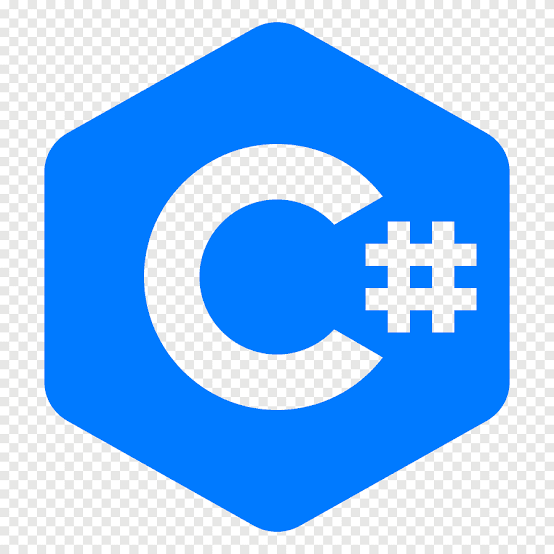

| Linguagem | Principal Utilização | Descrição | Nota Média dos usuarios |
|---|---|---|---|
| Aplicações Empresariais, Desenvolvimento Android | Java é uma linguagem de programação de propósito geral que é conhecida por sua portabilidade, o que significa que os programas escritos em Java podem ser executados em diferentes tipos de dispositivos sem a necessidade de recompilação. Ela é amplamente utilizada em aplicações empresariais, aplicativos móveis (Android) e em sistemas de grande escala. | 8,5 | |
| Desenvolvimento Web | JavaScript é uma linguagem de programação popular e útil principalmente para desenvolvimento web. Ela permite a criação de interatividade em páginas da web, sendo realizada nos navegadores dos usuários. Além disso, o JavaScript também é utilizado em ambientes de servidor (Node.js) e em diversos outros contextos. | 9 | |
|  | Aplicações Windows, Jogos, Aplicações Empresariais | C# é uma linguagem de programação orientada a objetos desenvolvidos pela Microsoft. É frequentemente usado para criar aplicativos Windows, jogos e aplicações empresariais. C# é uma parte central da plataforma de desenvolvimento .NET da Microsoft. | 8 |
| Desenvolvimento Web, Automação, Análise de Dados, IA | Python é uma linguagem de programação de alto nível, conhecida pela simplicidade e legibilidade de seu código. Ela é versátil, sendo utilizada em uma variedade de aplicações, incluindo desenvolvimento web, automação, análise de dados, aprendizado de máquina, entre outras áreas. Python também é amplamente trabalhado em ciência de dados. | 9,5 | |
| Desenvolvimento Android | Kotlin é uma linguagem de programação moderna que roda na Máquina Virtual Java (JVM) e pode ser usada em conjunto com Java em projetos. Ela foi desenvolvida pela JetBrains e é conhecida por sua precisão, segurança de tipo e interoperabilidade com o ecossistema Java. Kotlin é frequentemente escolhido para o desenvolvimento do Android. | 8,5 | |
| Desenvolvimento Web, Integração com Bancos de Dados | PHP é uma linguagem de script do lado do servidor, especialmente adequada para desenvolvimento web. Ela é utilizada para criar páginas dinâmicas e interativas, sendo frequentemente integrada com bancos de dados. O PHP é uma das linguagens mais populares para a criação de sites dinâmicos. | 7,5 |